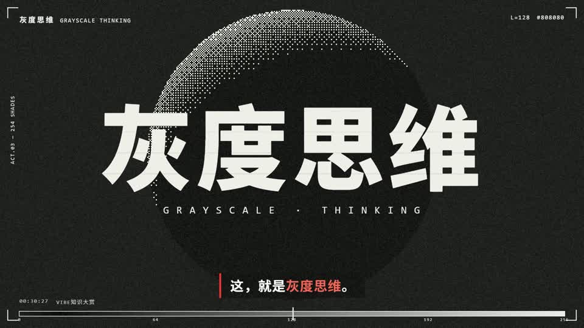

灰度思维 · 网点海报动态查看动态风格
选择你的视觉语言
从风格到作品，三步开始。
01 / 看效果
全部默认显示所有条目；精选只看你挑过的作品。外部参考保留作者与原帖。
02 / 拿提示词
复制风格卡片的提示词，换成自己的主题、文案和强调色。
03 / 交给 Claude
在制作工作区发送提示词。视频先看实际首帧，确认后继续全片。

全部默认显示所有条目；精选只看你挑过的作品。外部参考保留作者与原帖。
复制风格卡片的提示词，换成自己的主题、文案和强调色。
在制作工作区发送提示词。视频先看实际首帧，确认后继续全片。